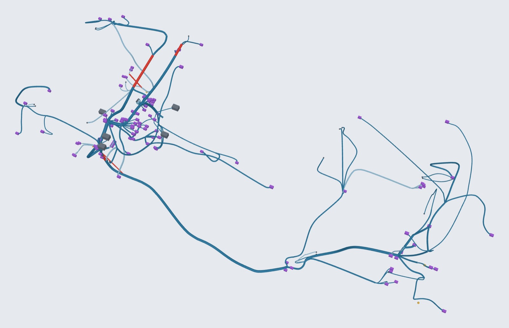

← Alle Projekte

Bordnetz-Knowledge-Graph
FAU – Lehrstuhl FAPS | 10/2026 | Entwickler (Wiss. Hilfskraft)
Echter VW-Leitungssatz als Knowledge Graph, Live-3D-Demo

Was?
- KBL (VDA 4964) beschreibt den Leitungssatz: Stecker, Leitungen, Module. Das E/E-Modell enthält Funktionen und Steuergeräte. Beide teilen nur Namen.
- Ziel: beide in einem semantischen Graphen verknüpfen, um Fragen zu beantworten, die keine Quelle allein beantwortet.
- Entwickelt, um die KBL-Datenformate im Detail zu verstehen, von XML bis zur 3D-Geometrie.
Wie?
- Ontologie (OWL, 12 Klassen, deutsche und englische Labels) und Python-Konverter (rdflib).
- SPARQL-Fragen zu Traceability, Änderungsauswirkung und Varianten: zuerst ein fiktiver Türsatz, dann der VW-Beispielsatz „Old Beetle“ (KBL 2.4).
- 3D-Verlegung aus den B-Spline-Mittellinien der KBL; interaktive Ansicht (Three.js).
Ergebnisse
- 5 957 Tripel; Varianten MAXI und MINI verglichen: 254 und 165 Verbindungen.
- Konsistenzprüfungen fanden ein leeres Modul und 5 Segmente mit Geometrie, die nicht zur Topologie passt.
- Live-Demo: suavi-yildirim.github.io/bordnetz-knowledge-graph